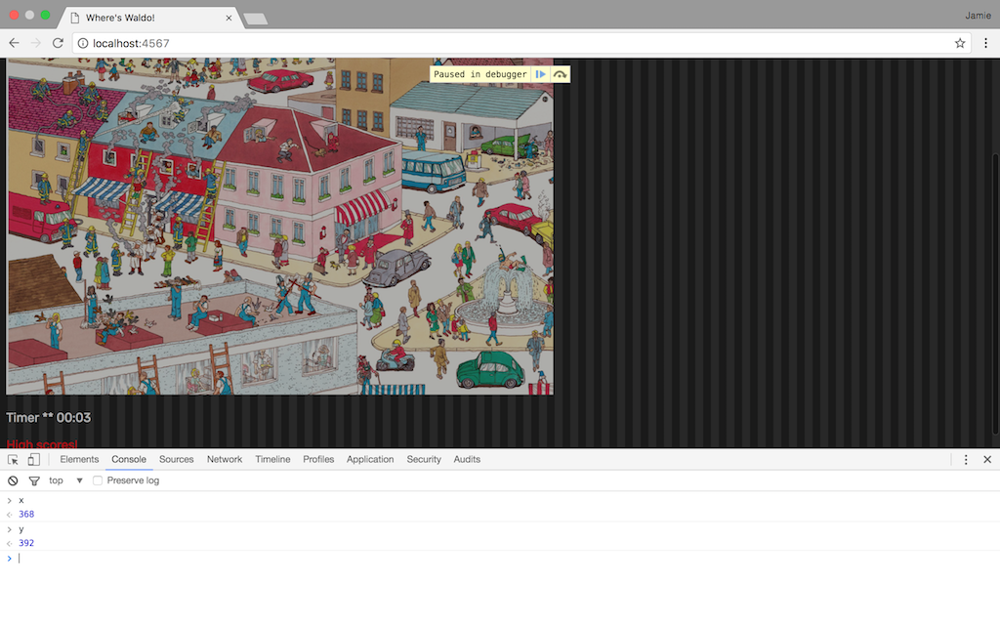

This tutorial will walk you through the steps of creating an interactive Where's Waldo game for the web. You will be able to select you're own Where's Waldo image, and build your program around this image.
It will store high scores on the server with the player's name for others to see. Most importantly from a programming perspective, the location of Waldo within the image will be stored server-side preventing the player from "cheating". To break the program down we will need to accomplish the following:
Sounds easy enough right!? Let's get started...
First let's go to your HTML page containing your Waldo image. We need a way to get x and y's pixel variables of the user's click location. We will compare these numbers to the real location of Waldo (which you should be aware of). First let's find Waldo's pixel coordinates within your image. If you haven't already, I suggest you use HTML to set a fixed width for your image, especially if the image is larger than your typical screen at full size. You want to make sure the image fits nicely in a window for the user to see, and also that it's size will be the same across different browser/computer setups. After this is done will use the JavaScript console of your browser to find Waldo's coordinate range.
In your code editor create a new JavaScript file. We will be using JavaScript for programming this portion of the game. Now let's create a function that will tell us the click location of our mouse within the image. This can be done with the code below:
We will be using JavaScript's window.event method which will give us all sorts of information about the state of the page as the event happens. But wait, what is the event? We also need to add an event listener to our JavaScript that will "listen" for when the click occurs, and execute the code in our findClickLocation function when it happens. Make some room at the top of your JS file and add the following code:
In order for the above event listener to work, you will need to return to your HTML page and give your Waldo image the class name "Waldo" (please see HTML tutorials on how this can be accomplished). The above JS code will add the event listener when our window, or page, loads. One last step we need in order to find Waldo's coordinates. Add a debugger; to the end of your findClickLocation function. The debugger will let us use your browser's JavaScript console to see where we are clicking. Everytime the browser reaches the debugger line (which will be on every click), it will halt the execution of the program and allow you to interact with it's current state.
The above image on the left shows me opening my JavaScript console. The image on the right shows me clicking on my waldo image with a debugger in place. I am in my browser's JavaScript console (in this case I am using Google Chrome, but your browser of choice will have something similiar). Feel free to type "click_event" into your console, and see the output of everything window.event gives you. All we need is the offsetX and offsetY position of the click. These are the location of the mouse within the event target (in this case the Waldo image).

Click around and write down the range Waldo exists within. We will need this a bit later. For now let's focus on getting the click location of x and y to a server. For this project we will be coding in Ruby on the server-side, and will be using the Sinatra framework. If you aren't sure how the Sinatra framework handles things, please read over the beginnings of this README to familiarize yourself. You will only need to understand the basics of a Ruby web framework in order to proceed. Create your controller action file first. Start it out with this code:
The above code will get the routes you need to finish the next few steps of our program. Return to your JS script file and let's write a function that will take our x and y coordinates and send them to the Ruby route '/return' we just created. Create a function named getData:
For now we just want to make sure it works, so I have included console.log statements within our true/false test that will just print "true" or "false" to your JS console. You're probably wondering what some of that code is. Here I am introducing AJAX (Asynchronous JavaScript and XML). Using AJAX, we can communicate easily between our client side code and our server side code. Examine the above code and see if you can guess what it is doing. It creates a new XMLHttpRequest, and sends our x and y variables as parameters to the server where we can use them in our Ruby code. Here is some good entry level reading on the details of AJAX if interested, but it is important to understand that it is basically designed to do two things:
Note my use of the onreadystatechange method when declaring what to do with my returned data (the console.logs you see in the anonymous function). There are different methods that can be used here, but with this one we are telling the page to wait until it receives an actual state change from the server. When you load a page using only HTML and JavaScript the browser will execute all of these languages' code immediately by default. Asking our JS to wait for a server response will halt the execution of that specific function until ready.
Back in the Ruby route for '/return' we need to create our function waldoTest to check and see if the user clicked on Waldo or not. If you haven't done so already, make a ruby file to hold your functions. Let's add the code to check if waldo exists:
This will return true or false based on your provided coordinates. Notice back on the controller page that we set this variable to a string before returning it at the end of the route. Any variable returned at the end of your Ruby route is what the JavaScript AJAX request will receive. A JavaScript boolean object is different from a Ruby boolean object, so we will instead use a string.
At this point test your program. It should be working. True or false should be returned to your JS console based on your click. If you have that working, let's make this thing a little more functional!
This next step is somewhat more open-ended. If you would like to let the user know that their click was unsuccessful, there are several creative ways you can do it. I just added an extra line in my HTML essentially saying "wrong location", and used some JavaScript and CSS magic to display it for a few seconds if false is returned. What about true? In my HTML I built a reusable hidden modal window (this way I can re-use it for both the end game message and high scores). If true is returned, this windows is displayed. Get creative with your HTML/CSS skills and see what you can come up with! Here is my updated getData function replacing our console.log statements with working code:
You might notice some code in the above function referring to a timer. Let's add some fun to your game by making a live timer on the screen that starts counting the instant the user loads the page. We can also use these times as a means of tracking high scores. There are several ways a timer in JavaScript can be accomplished. For this program I built a custom timer, that updates a string formatted like a clock ("minutes:seconds") every second:
My approach will create a bigger challenge later on when we go to sort our scores based on time (since we aren't actually storing time, but a string of time). But it does, in my opinion, look nicer to the user.
So the timer code was already added to my getData function above, now let's build a function that will store those scores on the server. You may have already noticed in my getData function I call a new function named storeScores that will run if a player wins and chooses to submit their score. We will need to create another AJAX request to send this information back to the server. Here goes:
While we are at it, let's also create a way to pull back those scores from the server for display. Create a link somewhere in your HTML and add an event listener in your JavaScript. Here is the code creating another AJAX request getting our scores:
Let's add some routes to our ruby controller to make this all work:
In our '/storescores' route we send the data to a function called storeScore. Let's write it:
We are writing the scores to a .csv file (in the above example, called 'highscores.csv') that will be stored on the server. Now what if someone wants to see the high scores? Let's make the '/showscores' function a reality. Depending on how you chose to track time you could be doing something completely different. But that's the fun in programming, solving unique problems in different ways! My function is a little more complicated because it needs to break our clock string down into seconds, sort the scores by seconds, and restore the time back to it's clock format. It's a fun algorithmic excercise to rack your brain on! Here is the code:
One last bonus that happened in the code above but I didn't explain was adding a name to the high scores. Before anything in JS or Ruby can accomplish this, you need to get some sort of input method integrated into your HTML. If you look above you can see I grab the user's name and send it with the score in the storeScores JavaScript function. The storeScore Ruby function than writes the name and corresponding time to the .csv file. The loadScores will sort the names when it sorts the times.
I hope this tutorial was informative and fun! Spend sometime after you get the game working styling it up through HTML and CSS. For added difficulty you can add multiple Waldo pictures to your challenge. Enjoy!